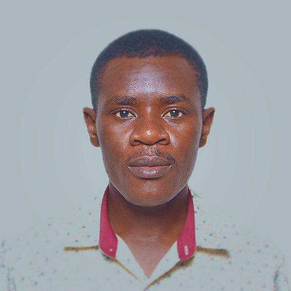
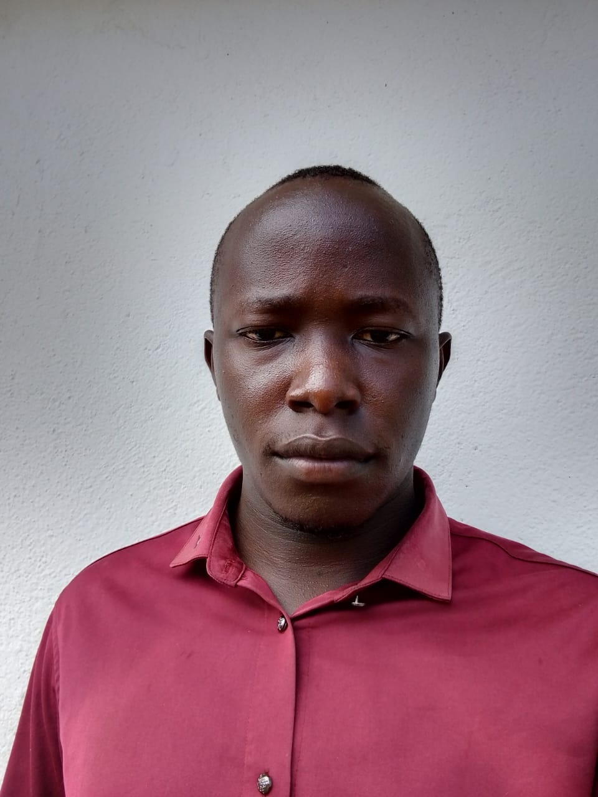

Mr. Seth Owino
Chairperson
Seth Owino is an accomplished IT professional with a passion for community development.
As the founder of Godalah Community-Based Organization (CBO), he brings a unique blend of skills and experience to the organization.
🌐 IT Expertise:
Seth’s background in information technology equips him to navigate the digital landscape effectively.
His proficiency spans areas such as software development, network administration, and cybersecurity. Whether it’s optimizing systems or implementing innovative solutions,
Seth’s technical acumen is an asset to Godalah CBO.
🌍 Community Engagement:
Beyond technology, Seth has actively engaged with communities.
His involvement in social sciences research has provided insights into local dynamics, needs, and aspirations.
Seth understands that sustainable development requires a holistic approach—one that considers cultural context, social structures, and individual empowerment.
🤝 Making a Difference:
Seth’s commitment to community development extends beyond theory.
He has successfully initiated projects that address pressing issues, from education and healthcare to economic empowerment.
His collaborative spirit and ability to build bridges between technology and community needs make him a valuable contributor to Godalah CBO’s mission.

Jared Opiyo
Ass. Chairperson
Jared, a dedicated teacher by profession, plays a pivotal role as the Assistant Chairperson of Godalah Community-Based Organization (CBO). His passion lies in creating awareness about the transformative power of education within the community.
📚 Educational Advocacy:
Jared’s commitment to education extends beyond the classroom.
He actively engages with community members, emphasizing the importance of learning at all stages of life.
Whether through workshops, campaigns, or one-on-one interactions, Jared tirelessly promotes education as a catalyst for positive change.
🌱 Empowering Minds:
Jared understands that education isn’t just about acquiring knowledge; it’s about empowerment.
By fostering a culture of lifelong learning, he encourages individuals to explore their potential, overcome barriers, and contribute meaningfully to society.
🤝 Collaborative Leadership:
As Assistant Chairperson, Jared collaborates with other team members to develop strategic initiatives.
His experience working across various departments within the community equips him to address multifaceted challenges effectively.
Jared’s unwavering belief in education’s ability to uplift communities makes him an invaluable asset to Godalah CBO’s mission..